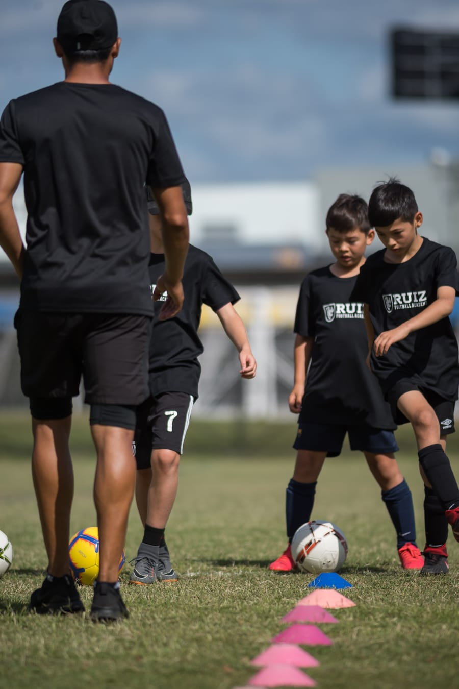

Football Language System
Lenguaje profesional de futbol en una sola plataforma
RFA.Learning integra traduccion, analisis y educacion deportiva para mejorar la comunicacion entre jugadores, entrenadores y analistas.
Resumen
Descripcion
El Football Language System (FLS) es una plataforma disenada para facilitar la comprension, traduccion y analisis del lenguaje del futbol en espanol e ingles.
Permite acceder a terminologia tecnica, tactica y comunicativa utilizada en el futbol profesional.
Proposito
Objetivo Del Sistema
- Traducir terminos del futbol en tiempo real.
- Comprender el lenguaje tecnico del deporte.
- Analizar jugadas y partidos.
- Apoyar procesos de scouting y desarrollo de jugadores.
- Facilitar la educacion deportiva.
Capacidades
Funcionalidades Principales
Usuarios
Para Quien Es Esta Plataforma
Visual
Experiencia En Campo

Acceso
Accede a la plataforma
Inicia sesion para utilizar las herramientas de gestion y aprendizaje de RFA.Learning.